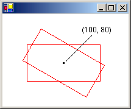
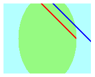
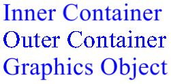

Использование вложенных графических контейнеров
GDI+ предоставляет контейнеры, которые можно использовать для временно заменить или дополнить некоторую часть состояния в Graphics объекта. Вы создадите контейнер путем вызова BeginContainer метод Graphics объекта. Вы можете вызвать BeginContainer несколько раз для создания вложенных контейнеров. Каждый вызов BeginContainer должны быть связаны с вызовом EndContainer.
Преобразования во вложенных контейнерах
В следующем примере создается Graphics объект и контейнер внутри этого Graphics объекта. Мировое преобразование объекта Graphics объект является сдвиг 100 единиц по оси x и на 80 единиц по оси y. Мировое преобразование контейнера является поворот на 30 градусов. Код выполняет вызов DrawRectangle(pen, -60, -30, 120, 60) дважды. Первый вызов DrawRectangle находится внутри контейнера; то есть происходит между вызовы BeginContainer и EndContainer. Второй вызов DrawRectangle — после вызова EndContainer.
Graphics graphics = e.Graphics;
Pen pen = new Pen(Color.Red);
GraphicsContainer graphicsContainer;
graphics.FillRectangle(Brushes.Black, 100, 80, 3, 3);
graphics.TranslateTransform(100, 80);
graphicsContainer = graphics.BeginContainer();
graphics.RotateTransform(30);
graphics.DrawRectangle(pen, -60, -30, 120, 60);
graphics.EndContainer(graphicsContainer);
graphics.DrawRectangle(pen, -60, -30, 120, 60);
Warning
It looks like the sample you are looking for does not exist.
В приведенном выше коде прямоугольника, отображаемые из контейнера, применяется сначала объемное преобразование контейнера (поворот), а затем по мировое преобразование объекта Graphics (сдвиг). Прямоугольник, извлеченных из вне контейнера, применяется только мировое преобразование объекта Graphics (сдвиг). На следующем рисунке показано два прямоугольника:

Обрезка во вложенных контейнерах
В следующем примере показано, как вложенные контейнеры обрабатывать отсеченных областей. Код создает Graphics объект и контейнер внутри этого Graphics объекта. Отсеченная область объекта Graphics объект представляет собой прямоугольник, а отсеченная область объекта контейнера — эллипс. Код делает два вызова DrawLine метод. Первый вызов DrawLine находится внутри контейнера, а второй вызов DrawLine выходит за пределы контейнера (после вызова EndContainer). Первая строка обрезается пересечение двух отсеченных областей. Вторая строка обрезается по прямоугольный вырезанной Graphics объекта.
Graphics graphics = e.Graphics;
GraphicsContainer graphicsContainer;
Pen redPen = new Pen(Color.Red, 2);
Pen bluePen = new Pen(Color.Blue, 2);
SolidBrush aquaBrush = new SolidBrush(Color.FromArgb(255, 180, 255, 255));
SolidBrush greenBrush = new SolidBrush(Color.FromArgb(255, 150, 250, 130));
graphics.SetClip(new Rectangle(50, 65, 150, 120));
graphics.FillRectangle(aquaBrush, 50, 65, 150, 120);
graphicsContainer = graphics.BeginContainer();
// Create a path that consists of a single ellipse.
GraphicsPath path = new GraphicsPath();
path.AddEllipse(75, 50, 100, 150);
// Construct a region based on the path.
Region region = new Region(path);
graphics.FillRegion(greenBrush, region);
graphics.SetClip(region, CombineMode.Replace);
graphics.DrawLine(redPen, 50, 0, 350, 300);
graphics.EndContainer(graphicsContainer);
graphics.DrawLine(bluePen, 70, 0, 370, 300);
Warning
It looks like the sample you are looking for does not exist.
На следующем рисунке показано два усеченные строки:

Как показано в двух приведенных выше примерах, преобразования и отсеченные области накапливаются в вложенные контейнеры. Если задать объемные преобразования контейнера и Graphics объекта, оба вида преобразований применяются к отображаемым внутри контейнера. Преобразование контейнера будут сначала применяется и преобразование Graphics объекта, которые будут применяться во-вторых. Если задать отсеченные области контейнера и Graphics объектов, отображаемых внутри контейнера будет обрезаться пересечение двух отсеченных областей.
Параметры качества во вложенные контейнеры
Параметры качества (SmoothingMode, TextRenderingHintи ей подобные) в вложенные контейнеры не являются накопительными; вместо этого параметры качества контейнера временно Замените параметры качества Graphics объекта. При создании нового контейнера, параметры качества для этого контейнера присваиваются значения по умолчанию. Например, предположим, что у вас есть Graphics объект с режим сглаживания AntiAlias. При создании контейнера, режим сглаживания в контейнер по умолчанию режим сглаживания. Вы можете задать режим сглаживания контейнера и все элементы, отображаемые из контейнера привязки будет рисоваться в соответствии с режимом, которые можно задать. Объекты, отображаемые после вызова EndContainer будут отображаться в соответствии с режимом сглаживания (AntiAlias), которая была до вызова BeginContainer.
Несколько уровней вложенных контейнеров
Вы не ограничены один контейнер в Graphics объекта. Можно создать последовательность контейнеров, вложенных друг в друга, и можно указать мировое преобразование, отсеченной области и параметры качества для каждого из этих вложенных контейнеров. Если вызвать метод рисования из внутреннего контейнера, преобразования применяются в порядке, начиная с контейнером внутреннего и внешнего контейнера. Объекты, отображаемые из внутреннего контейнера обрезаются пересечением отсеченных областей.
В следующем примере создается Graphics и устанавливает его подсказка отрисовки текста AntiAlias. Код создает два контейнеров — по одному вложен в другой. Подсказка по визуализации текста внешнего контейнера имеет значение SingleBitPerPixel, и подсказка по визуализации текста внутреннего контейнера имеет значение AntiAlias. Код рисует три строки: одну из внутреннего контейнера, одну из внешнего контейнера и один из Graphics сам объект.
Graphics graphics = e.Graphics;
GraphicsContainer innerContainer;
GraphicsContainer outerContainer;
SolidBrush brush = new SolidBrush(Color.Blue);
FontFamily fontFamily = new FontFamily("Times New Roman");
Font font = new Font(fontFamily, 36, FontStyle.Regular, GraphicsUnit.Pixel);
graphics.TextRenderingHint = System.Drawing.Text.TextRenderingHint.AntiAlias;
outerContainer = graphics.BeginContainer();
graphics.TextRenderingHint = System.Drawing.Text.TextRenderingHint.SingleBitPerPixel;
innerContainer = graphics.BeginContainer();
graphics.TextRenderingHint = System.Drawing.Text.TextRenderingHint.AntiAlias;
graphics.DrawString(
"Inner Container",
font,
brush,
new PointF(20, 10));
graphics.EndContainer(innerContainer);
graphics.DrawString(
"Outer Container",
font,
brush,
new PointF(20, 50));
graphics.EndContainer(outerContainer);
graphics.DrawString(
"Graphics Object",
font,
brush,
new PointF(20, 90));
Warning
It looks like the sample you are looking for does not exist.
На следующем рисунке эти три строки. Строки, выводимые из внутреннего контейнера и Graphics объект Сглаживается, с помощью сглаживания. Строка, выводимая из внешнего контейнера не подвергается сглаживанию, так как TextRenderingHint свойству SingleBitPerPixel.
